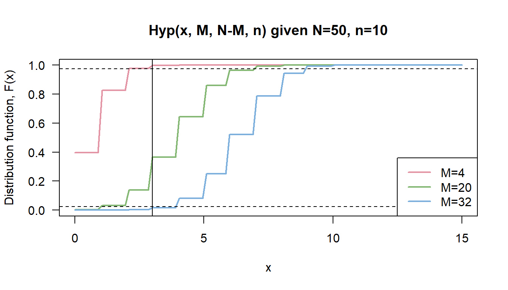

../vignettes/Sprop-vignette.Rmd
Sprop-vignette.RmdIn survey sampling on a finite population, a simple random sample is typically selected without replacement, in which case a hypergeometric distribution models the observation. A standard construction for the confidence interval is based on a Normal approximation of the proportion with plug-in estimates for proportion and respective variance.
I most scenarios, this strategy results in satisfactory properties. However, if \(p\) is close to 0 or 1, it is recommended to use the exact confidence interval based on the hypergeometrical distribution (Kauermann and Kuechenhoff 2010). The Wald-type interval has a coverage probability as low as \(n/N\) for any \(\alpha\) (Wang 2015). Therefore, there is no guarantee for the interval to capture the true \(M\) with the desired confidence level if the sample is much smaller than the population (Wang 2015).
samplingbook
The function samplingbook::Sprop() estimates the proportion out of samples either with or without consideration of finite population correction.
Parameters are
m an optional non-negative integer for number of positive events,n an optional positive integer for sample size,N positive integer for population size. Default is N=Inf, which means calculations are carried out without finite population correction.In case of finite population of size N is provided, different methods for calculating confidence intervals are provided
approx Wald-type interval based on normal approximation (Agresti and Coull 1998), andexact based on hypergeometric distribution as described in more detail in this document.Sprop(m=3, n = 10, N = 50, level = 0.95) #> #> Sprop object: Sample proportion estimate #> With finite population correction: N = 50 #> #> Proportion estimate: 0.3 #> Standard error: 0.1366 #> #> 95% approximate confidence interval: #> proportion: [0.0322,0.5678] #> number in population: [2,28] #> 95% exact hypergeometric confidence interval: #> proportion: [0.08,0.64] #> number in population: [4,32]
We observe \(X=m\), the number of sampled units having the characteristic of interest, where \(X \sim Hyper(M, N, n)\), with
The respective density, i.e. the probability of successes in a sample given \(M, N, n\), is \[\Pr(X=m) = \frac{{M \choose m} {N-M \choose n-m}}{N \choose n}, \text{ with support }m \in \{\max(0,n+M-N), \min(M,n)\} \]
We want to estimate population proportion \(p = M/N\), which is equivalent to estimating \(M\), the total number of population units with some attribute of interest. Then, the boundaries for the exact confidence interval \([L,U]\) can be derived as follows:
\[ \begin{aligned} \Pr(X \leq m) & = \sum_{x=0}^m \frac{{U \choose x} {N-U \choose n-x}}{N \choose n} = \alpha_1 \\ \Pr(X \geq m) & = \sum_{x=m}^n \frac{{L \choose x} {N-L \choose n-x}}{N \choose n} = \alpha_2,\\ & \text{with coverage constraint } \alpha_1 + \alpha_2 \leq \alpha \end{aligned} \] For sake of simplicity, we assume symmetric confidence intervals, i.e \(\alpha_1 = \alpha_2 = \alpha/2\).
The implementation of the exact confidence interval for proportion estimates uses the hypergeometric distribution function phyper(x, M, N-M, n). Note that the parametrization differs slightly from ours.

We search for the optimal confidence boundaries \([L,U]\) that fulfill the requirements as defined in the equations above.
Agresti, Alan, and Brent A Coull. 1998. “Approximate Is Better Than ‘Exact’ for Interval Estimation of Binomial Proportions.” The American Statistician 52 (2): 119–26.
Kauermann, Goeran, and Helmut Kuechenhoff. 2010. Stichproben: Methoden Und Praktische Umsetzung Mit R. Springer-Verlag.
Wang, Weizhen. 2015. “Exact Optimal Confidence Intervals for Hypergeometric Parameters.” Journal of the American Statistical Association 110 (512): 1491–9.